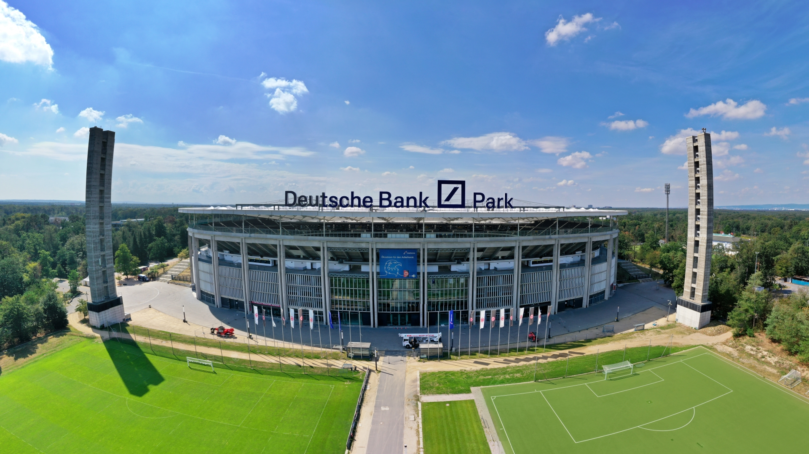

A UEFA Europa League 2026/27 entra em sua fase principal em setembro com os classificados definidos e todo o calendário da fase de liga estabelecido. A primeira rodada será disputada excepcionalmente entre quarta e quinta-feira antes de o torneio retornar às tradicionais quintas-feiras nas jornadas seguintes.
Esta será a 56ª edição da competição e a 18ª desde que a antiga Copa da UEFA passou a utilizar oficialmente o nome UEFA Europa League. Também será a terceira temporada com o atual sistema de liga única de 36 participantes, formato que aumentou o número de adversários diferentes enfrentados por cada equipe.
A transformação faz parte de uma trajetória muito maior. Dos anos da Copa da UEFA ao atual modelo, títulos históricos, grandes clubes e diferentes gerações ajudaram a construir a história da Europa League.
A edição 2026/27 também reforça a conexão entre as duas principais competições de clubes da UEFA. Enquanto a Europa League reúne 36 equipes em busca do título e de uma possível vaga na principal competição continental, a Champions League 2026, também começa em setembro com 36 times, calendário definido e novo ciclo de grandes confrontos. Os dois torneios utilizam o sistema de fase de liga, no qual cada equipe disputa oito partidas antes da definição dos classificados para o mata-mata.
Todos os 36 times classificados para a Europa League 2026/27
A fase de liga reúne representantes de 22 países. Inglaterra e França possuem três clubes cada, enquanto várias outras federações aparecem com dois representantes. A relação divulgada pela UEFA é a seguinte:
Armênia
- Ararat-Armenia
Áustria
- Salzburg
- Sturm Graz
Bélgica
- Anderlecht
- Union Saint-Gilloise
Bulgária
- Levski Sofia
Croácia
- Dinamo Zagreb
Chipre
- Omonia
Chéquia
- Sparta Praga
- Viktoria Plzeň
Inglaterra
- Bournemouth
- Crystal Palace
- Sunderland
França
- Lyon
- Marseille
- Rennes
Alemanha
- Hoffenheim
- Bayer Leverkusen
Grécia
- OFI Crete
- Olympiacos
Hungria
- Ferencváros
Israel
- Hapoel Beer-Sheva
Itália
- Milan
- Juventus
Países Baixos
- AZ Alkmaar
- NEC Nijmegen
Noruega
- Lillestrøm
Polônia
- Jagiellonia
- Lech Poznań
Portugal
- Benfica
- Torreense
Escócia
- Celtic
Eslovênia
- Celje
Espanha
- Real Sociedad
- Celta de Vigo
Turquia
- Beşiktaş
A composição da edição 2026/27 combina camisas de grande tradição continental, como Milan, Juventus e Benfica, com equipes que terão a oportunidade de ampliar sua presença no cenário europeu.
O destaque da abertura
Entre os jogos da primeira rodada, Milan x Benfica é provavelmente o confronto que mais chama atenção pelo peso histórico das duas camisas no futebol europeu.
O Bayer Leverkusen recebe o Celje, enquanto Anderlecht e Lyon fazem outro duelo tradicional.
Na quinta-feira, a Juventus começa sua campanha contra o NEC. O Crystal Palace enfrenta o Lech Poznań, enquanto a Real Sociedad recebe o Bournemouth. Beşiktaş x Marseille também aparece entre os confrontos de maior repercussão da rodada inaugural.
Jogos da primeira rodada
Os horários abaixo já estão convertidos para o horário de Brasília.
Quarta-feira, 16 de setembro
- 13h45 — Ararat-Armenia x Sparta Praga
- 13h45 — Omonia x Celta de Vigo
- 16h — Milan x Benfica
- 16h — Bayer Leverkusen x Celje
- 16h — Hapoel Beer-Sheva x Dinamo Zagreb
- 16h — Olympiacos x Jagiellonia
- 16h — Anderlecht x Lyon
- 16h — Sturm Graz x Rennes
- 16h — Sunderland x AZ Alkmaar
Quinta-feira, 17 de setembro
- 13h45 — OFI Crete x Hoffenheim
- 13h45 — Levski Sofia x Salzburg
- 16h — Beşiktaş x Marseille
- 16h — Celtic x Ferencváros
- 16h — Crystal Palace x Lech Poznań
- 16h — Viktoria Plzeň x Union Saint-Gilloise
- 16h — Juventus x NEC Nijmegen
- 16h — Lillestrøm x Torreense
- 16h — Real Sociedad x Bournemouth
Como funciona a Europa League 2026/27
A Europa League utiliza o mesmo princípio básico adotado na Champions League para sua fase inicial. Os 36 clubes ficam reunidos em uma classificação única, sem os antigos grupos de quatro equipes.
Cada participante disputa oito partidas contra oito adversários diferentes:
- quatro jogos como mandante;
- quatro jogos como visitante;
- dois adversários provenientes de cada um dos quatro potes do sorteio;
- uma partida contra cada adversário, sem turno e returno na fase de liga.
Clubes de uma mesma federação não podem se enfrentar nessa etapa. Além disso, cada equipe pode ter no máximo dois adversários pertencentes a uma mesma associação estrangeira.
Depois das oito rodadas, a classificação geral define os participantes do mata-mata.
- Do 1º ao 8º lugar — avançam diretamente às oitavas de final.
- Do 9º ao 24º lugar — disputam os playoffs eliminatórios em confrontos de ida e volta.
- Do 25º ao 36º lugar — são eliminados das competições europeias.
Os oito vencedores dos playoffs se juntam aos oito primeiros colocados para formar as oitavas de final. A partir daí, a Europa League segue em sistema eliminatório até a decisão.
Datas das oito rodadas da fase de liga:
- 1ª rodada — 16 e 17 de setembro de 2026
- 2ª rodada — 15 de outubro de 2026
- 3ª rodada — 22 de outubro de 2026
- 4ª rodada — 5 de novembro de 2026
- 5ª rodada — 26 de novembro de 2026
- 6ª rodada — 10 de dezembro de 2026
- 7ª rodada — 21 de janeiro de 2027
- 8ª rodada — 28 de janeiro de 2027
Assim como ocorre nas outras competições europeias com o novo formato, a rodada final ganha importância especial. Os 18 jogos da oitava jornada serão disputados simultaneamente, evitando que clubes entrem em campo conhecendo previamente todos os resultados dos concorrentes diretos.
Calendário do mata-mata da Europa League 2026/27
- Playoffs — 18 e 25 de fevereiro de 2027
- Oitavas de final — 11 e 18 de março de 2027
- Quartas de final — 8 e 15 de abril de 2027
- Semifinais — 29 de abril e 6 de maio de 2027
A decisão está marcada para quarta-feira, 26 de maio de 2027, no Stadion Frankfurt, em Frankfurt, na Alemanha. O estádio é a casa do Eintracht Frankfurt e possui experiência em grandes competições internacionais. O local recebeu cinco partidas da Eurocopa de 2024, além de ter sido utilizado na Copa do Mundo de 2006.
As datas fazem parte do calendário oficial divulgado pela UEFA, que ressalta que a programação está sujeita a alterações.
O título em Frankfurt terá ainda uma recompensa esportiva importante: o campeão da garante vaga na fase de liga da Champions League 2027/28 caso não consiga a classificação por meio de sua competição nacional. O vencedor também terá o direito de enfrentar o campeão da Champions na Supercopa da UEFA de 2027.
O atual campeão
A edição anterior terminou com título do Aston Villa. Em 20 de maio de 2026, o clube inglês derrotou o Freiburg por 3 a 0 na final realizada em Istambul.
Youri Tielemans, Emiliano Buendía e Morgan Rogers marcaram os gols da decisão, dando ao Aston Villa seu primeiro título da Europa League e o primeiro troféu continental do clube desde a conquista da antiga Copa dos Campeões Europeus em 1982.
O atual campeão não está entre os 36 participantes desta edição porque disputa a Champions League 2026/27, uma das consequências da conquista.
Onde assistir à Europa League 2026/27
No Brasil, a CazéTV aparece na relação oficial da UEFA como parceira de transmissão da Europa League para a temporada. A cobertura pode ser acompanhada gratuitamente pelas plataformas digitais do canal, especialmente pelo YouTube.
Como existem diversas partidas simultâneas em cada rodada, a grade específica de jogos transmitidos deve ser consultada a cada jornada.
Início com gigantes e espaço para novas histórias
A temporada 2026/27 apresenta uma Europa League com características que historicamente tornam o torneio imprevisível. Milan, Juventus e Benfica carregam enorme tradição internacional. Bayer Leverkusen, Lyon, Marseille, Real Sociedad e Celtic também possuem experiência em competições europeias, enquanto ingleses como Crystal Palace, Bournemouth e Sunderland chegam com capacidade para tornar a disputa ainda mais equilibrada.
Ao mesmo tempo, o formato de liga única reduz a previsibilidade existente nos antigos grupos. Uma derrota não afeta apenas a disputa contra três adversários diretos: ela pode representar perda de várias posições entre 36 equipes.
O objetivo inicial é claro. Terminar entre os oito primeiros significa avançar diretamente às oitavas de final e evitar dois jogos adicionais. Para quem ficar entre o 9º e o 24º lugar, fevereiro será reservado para um mata-mata antes mesmo das oitavas.
A caminhada começa em 16 de setembro de 2026, passa por oito rodadas até 28 de janeiro de 2027 e terminará em Frankfurt, em 26 de maio. Entre a abertura e a grande decisão na Alemanha, a Europa League 2026/27 terá 144 partidas somente em sua fase de liga para definir quais clubes permanecerão na corrida por um dos títulos mais importantes do futebol europeu.